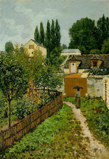

Bava Batra 100 - Seven Futilities

If one had a public path going through his field (either it was owned by the public from before, or he ceded it to the public) - and then he took that path for himself and gave the public another path at the side of the field, he may not take the new path back, but the original one does not become his.
The standard width of a private path is 4 amot (6 ft), public thoroughfare - 16, and standing ceremony - 4 kavs (60x60 ft). As people were walking from the cemetery, the leader would say "Stand, dear ones, stand." Then he would say, "Sit, dear ones, sit," and they would sit and bemoan their loss. This was done seven times, corresponding to seven "futilities" in Ecclesiastes and seven components in the cycle of times .
Art: Alfred Sisley - Garden Path in Louveciennes